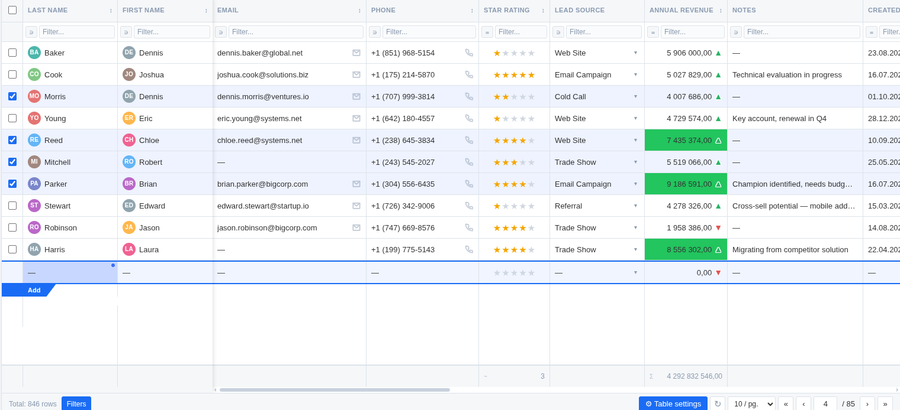

User Guide
How to use SETKI Grid inside Zoho CRM. Last updated: 2026-07-18
1. What is SETKI Grid
SETKI Grid replaces the standard Zoho CRM list view with a fully editable, high-performance data table. It runs inside your Zoho CRM tab exactly where the module's list view normally appears — leads, deals, contacts, or any other module your administrator has configured. Everything below happens without leaving Zoho CRM.
2. Viewing your data
The grid loads your records as rows and fields as columns, just like the CRM list view — but faster and richer:
- —Handles large modules smoothly — 500+ rows and 20+ columns without slowdown
- —Choose how many rows appear per page (10 / 25 / 50 / 100 / 200) if your administrator has made this adjustable
- —Click the refresh control to reload the latest data without reloading the whole page
- —Some columns may be "frozen" by your administrator — they stay visible on the left while you scroll horizontally through the rest
3. Editing records inline
Double-click any cell to edit it directly — no need to open the record. Press Enter or click away to save; your change appears immediately, and rolls back automatically if the save fails.

Every field type edits the way you'd expect:
- —Text, numbers, currency, percent — type directly
- —Picklists and multi-select — a dropdown with search opens
- —Lookup fields — search across your CRM records to link one
- —Dates — a date picker opens
- —Checkboxes — click to toggle
- —Email / phone / URL — edited as text, validated, and clickable when not editing
If a field is required, the grid won't let you save it empty. If your administrator has set the grid to read-only, cells won't open for editing at all.
4. Bulk editing multiple rows

Select several rows using the row checkboxes, then change one field — the new value is applied to every selected row at once. Useful for updating a stage, owner, or status across dozens of records in seconds instead of opening each one.
5. Filtering and sorting
- —Use the filter row under the column headers to filter by any field. Available operators depend on the field type — contains, equals, greater/less than, starts with, ends with, and more
- —Click a column header to sort by it; you can sort by more than one column at a time
- —Your administrator may set default filters or sort order for the team — these apply automatically when you open the grid
6. Seeing trends without leaving the grid

Where your administrator has configured them, columns can show:
- —Sparklines — a small line chart in the cell, built from related data. Hover to see exact values at each point; use the refresh control to pull the latest data into the chart
- —Color thresholds — a cell's background changes color when its value crosses a defined limit, so outliers stand out at a glance
- —Deadline highlighting — date fields turn yellow when due today and red when overdue
- —Stock mode — numeric trend fields show an up or down arrow with color instead of a plain number
- —Progress bars — percent fields render as a filled bar instead of a number
- —Star ratings — numeric fields render as ★★★☆☆
7. Column totals
Numeric columns can show a totals row at the bottom of the grid — Sum or Average, whichever your administrator has set for that column.
8. Switching between tabs
If your administrator has set up more than one table in this widget — for example, the same module viewed with different filters — a sidebar of tabs appears on the left. Click a tab to switch tables. Each tab keeps its own column layout, filters, and settings independently.
9. Your view is your own
Column width, column order, page size, and row sort order that you set yourself are remembered per-device — they don't affect what your teammates see, and they persist the next time you open the grid on the same device.
10. Language
SETKI Grid's interface automatically matches your browser language. Supported: English, Russian, Hindi, Spanish, Portuguese, German, French, Italian.
11. Free vs. Pro access
Organizations with up to 3 assigned users get full functionality at no cost. From the 4th user, access is seat-based — your administrator purchases and assigns seats. If you see a message asking you to contact your administrator, it means your organization needs an additional seat or one hasn't been assigned to you yet. This doesn't affect what the grid can do — Free and Pro have identical functionality, the difference is purely how many people can use it.
12. Need help?
Configuration questions (columns, filters, visualizations, presets, roles) are handled by your Zoho CRM administrator — SETKI Grid's settings panel is available to them from the grid.
For anything else, email us at dev@setki.dev.